This is the B230FD, 8-valve SOHC, non-turbo procedure. The same manual table lists the 16-valve B234F head at 20 Nm, 40 Nm, then +115°. That is a different number on the angle stage, so the two are not interchangeable. Confirm which head you have before you torque anything.
Tap a step to check it off. Progress is saved in this browser only.
The manual's own checks, before you spend a weekend on it.
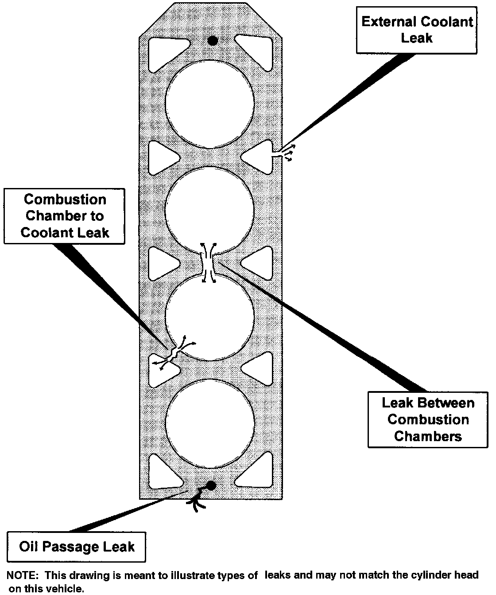
Pressure test the cooling system and look along the head-to-block joint for coolant.
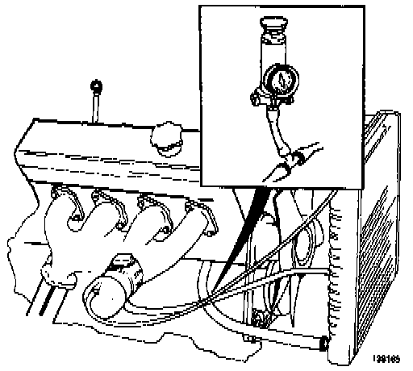
Pull all four plugs and look for coolant on them. Then crank the engine a few revolutions with the plugs out; a cylinder with a combustion-to-coolant leak will spit coolant.
Compression test all four while watching the coolant level. Low compression on two adjacent cylinders, or bubbles in the radiator during the test, points at the gasket.
Check the oil. Light contamination is a creamy coffee color; heavy is thick and light tan.
Run a chemical combustion leak test on the coolant. Any combustion gas in there means a leaking gasket.
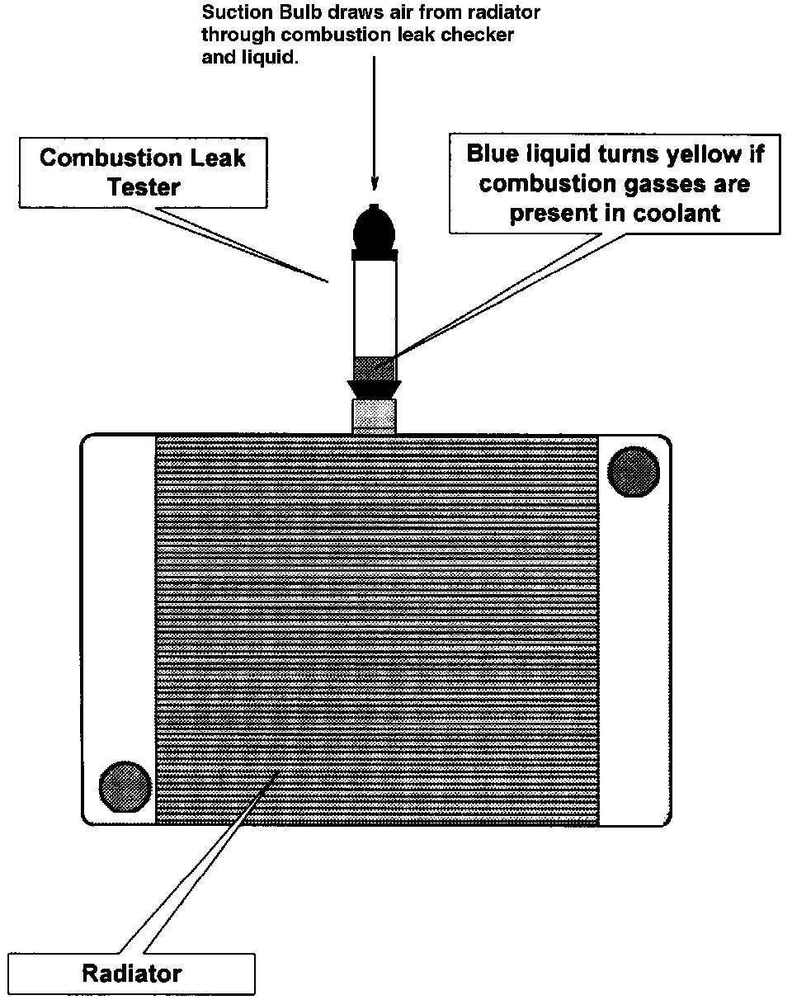
Do the cranking test with the engine cold and stay clear of the engine bay. Coolant can come out of the plug holes with a lot of force.
The manual notes that coolant in the oil can also come from an intake manifold leak.
Special tool: 5034 camshaft gear counterhold. You also need a 3 mm drill bit to pin the belt tensioner.
Disconnect the battery ground lead.
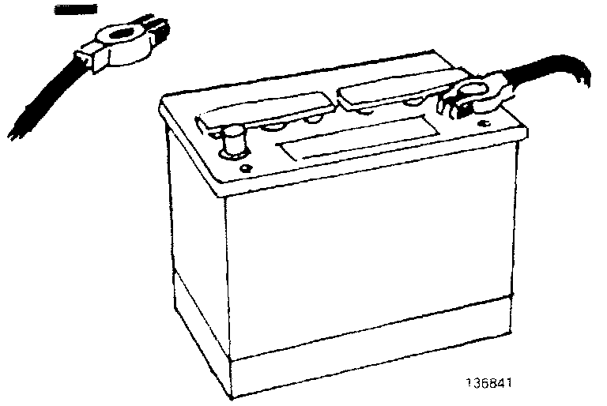
Drain the coolant from the nipple on the right-hand side of the engine. Put a hose on the nipple so it doesn't go everywhere.
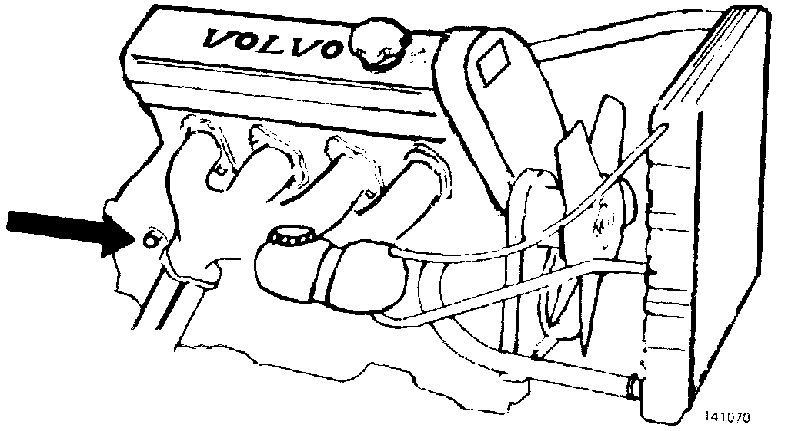
Remove the distributor cap.
Remove the external attachments from the head as needed.
Remove the fan, the preheater hose clamp under the fan shroud if your car has one, and the fan shroud.
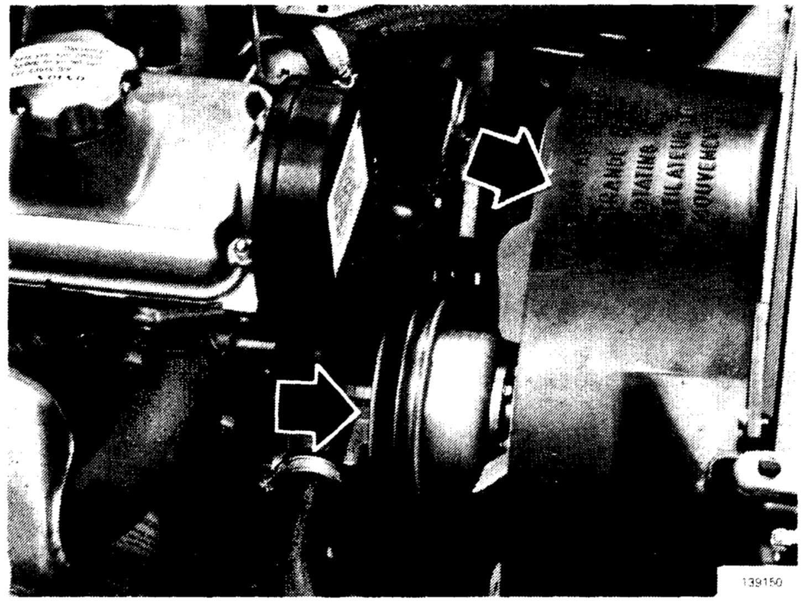
Loosen the adjusters, remove all drive belts, then remove the coolant pump pulley.
Remove the upper timing gear cover: 10 mm socket on the M6 bolt (1), 12 mm socket on the M8 bolt (2), Phillips on the sheet metal screw (3).
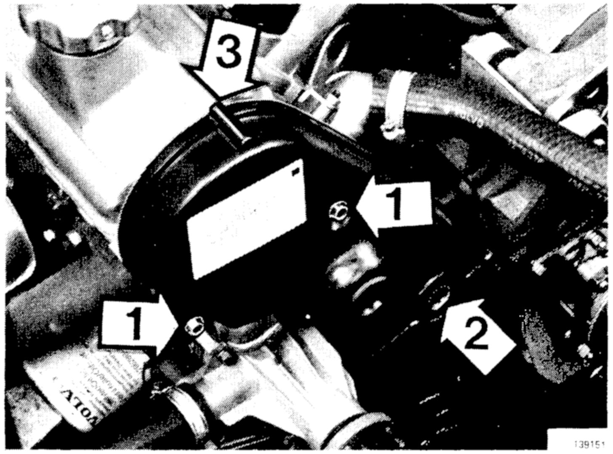
Turn the crank on its center bolt until the cam pulley mark lines up with the mark on the inner timing cover and the crank mark sits at 0 on the lower timing cover.
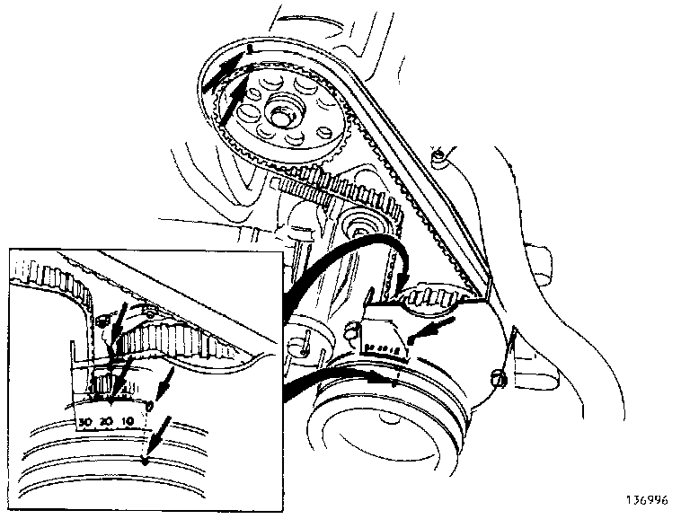
Remove the tensioner nut and washer. Pull on the belt to compress the tensioner spring, then push a 3 mm drill through to lock the spring.
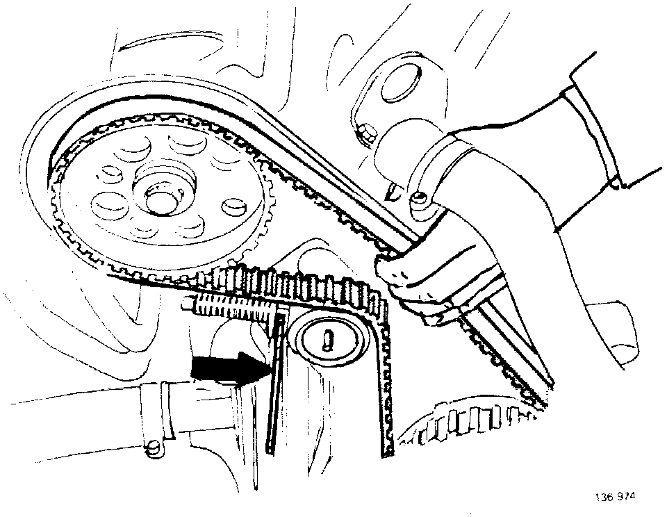
Remove the timing belt.
Remove the camshaft gear and spacer washer, holding the gear with tool 5034.
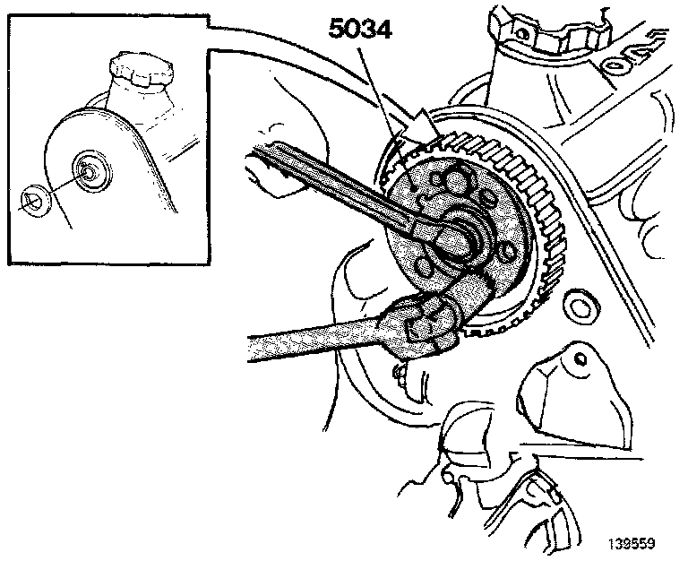
Remove the stud bolt for the timing belt tensioner.
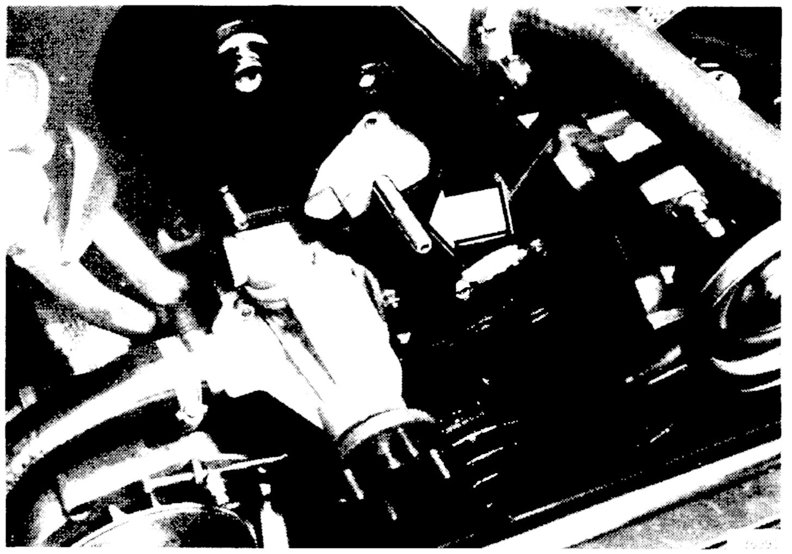
Do not rotate the crankshaft or the camshaft once the belt is off. The pistons can hit the valves.
Loosen the head bolts in the removal order below. It works from the ends inward, the reverse of the tightening pattern.
Lift the head off and set it on wooden blocks. It is aluminum and scratches easily.
Laid out as drawn in the manual figure.
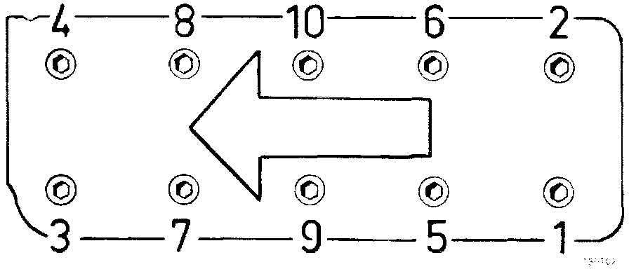
Center out. Same orientation as the loosening figure.
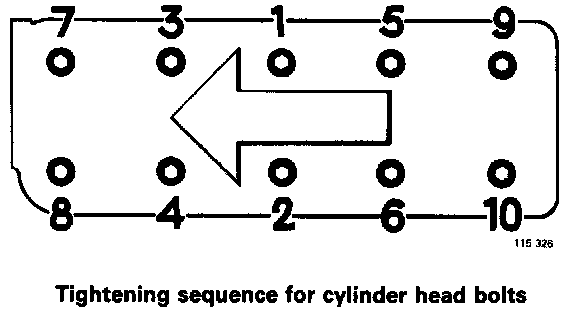
Clean the head and the gasket face. Remove senders where fitted.
Check warp with a steel straightedge and feeler gauge. Limit is 0.50 mm lengthwise and 0.25 mm across. Over that, machine the head.
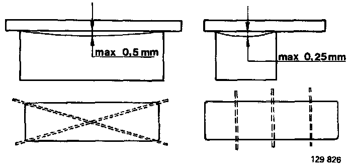
Measure head height. New is 146.1 mm; minimum is 145.6 mm. That leaves 0.5 mm total for machining over the life of the head.
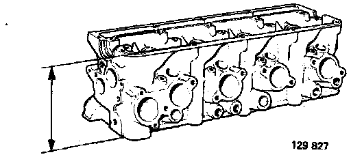
Clean and check the spark plug threads.
Check the timing belt tensioner. The bearing must not be worn and the roller face must not be damaged. A damaged roller face means both roller and belt get replaced.
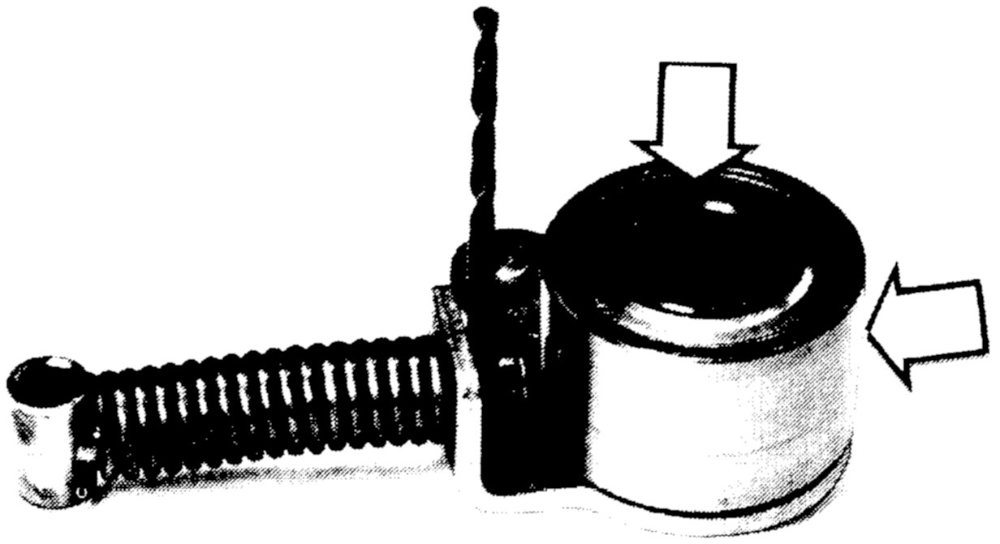
Warp over 1.0 mm lengthwise or 0.5 mm across means the head gets replaced, not machined.
Replace any bolt whose center section shows stretch. Do not reuse bolts more than 5 times. The manual's words: if in doubt, fit new bolts. On a car this old you don't know the count, so buy the set.
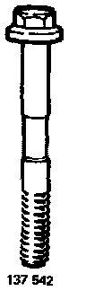
Confirm No. 1 piston at TDC and the cam at TDC firing for No. 1. These should not have moved since removal.
Lay the new head gasket down and set the head on it.
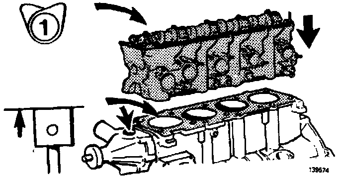
Check that the coolant pump O-ring sits in its groove.
Oil the head bolts. Every torque in this manual assumes oiled threads; dry or washed bolts give a false reading.
Torque every bolt in the tightening order to 20 Nm.
Go around again in the same order to 60 Nm.
Go around a third time and angle-tighten each bolt +90°.
The manual prints two conversions for the same Newton-meter values: 15 or 14 ft-lb for stage 1 and 45 or 43 ft-lb for stage 2. The math is 14.8 and 44.3. Set the wrench in Nm if it has the scale.
Install the camshaft gear and spacer washer, holding it with 5034. Gear bolt is 50 Nm.
Install the tensioner stud, then the tensioner, washer and nut.
Set the gears to their marks and point the rotor at the mark on the distributor.
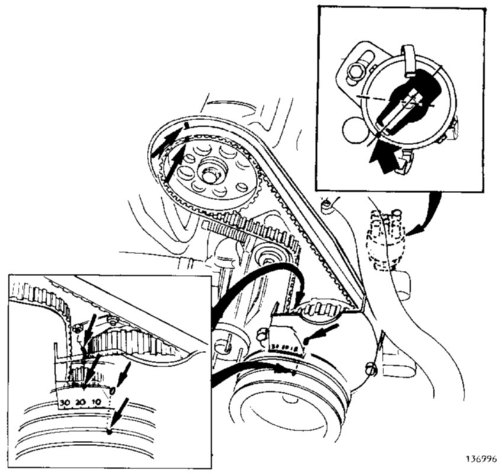
Put the belt around the crank gear and the intermediate shaft gear first. Then stretch it over the cam gear and the tensioner.
Pull the 3 mm drill out of the tensioner.
Recheck: gear marks opposite the engine marks, rotor opposite the distributor mark.
Turn the engine clockwise to TDC. Back the tensioner nut off about one turn so the spring sets the tension, then retighten it.
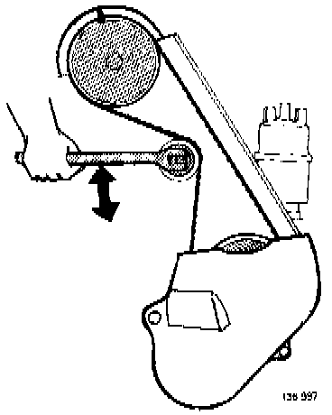
Refit the upper timing cover (10 mm M6 (1), 12 mm M8 (2), Phillips screw (3)).
Check valve clearance. Spec is the same for intake and exhaust; see the table below. If it's out, adjust with shims.
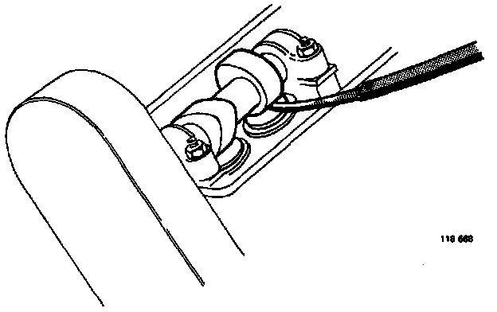
Valve cover and gasket on.
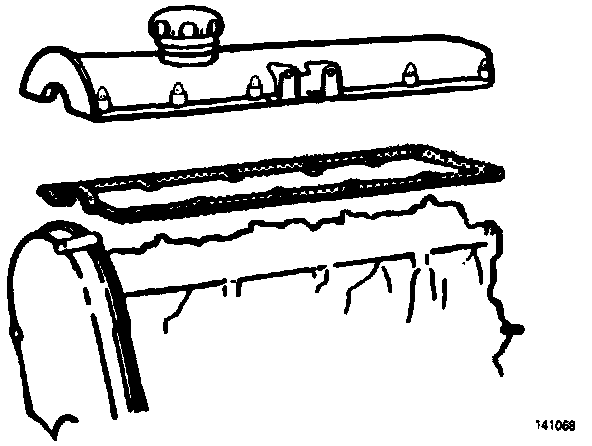
Set the distributor on the head, turn the rotor while pressing it in until the shaft drops into the camshaft recess, then fit the hold-down bolt and cap.
Reconnect the ground lead.
Refit everything else to the head and intake manifold. Coolant pump pulley, belts, fan shroud and fan go back in reverse of removal.
Refill coolant: 9.4 L with a manual, 9.2 L with an automatic.
Warm the engine up.
Check and adjust ignition timing, idle speed and CO.
Check the cooling system for leaks and top it up.
Engine off. Re-tension the timing belt: pull the rubber plug in the timing cover, turn the engine to TDC, slacken the tensioner nut, let the spring take up the slack, tighten the nut, refit the plug.
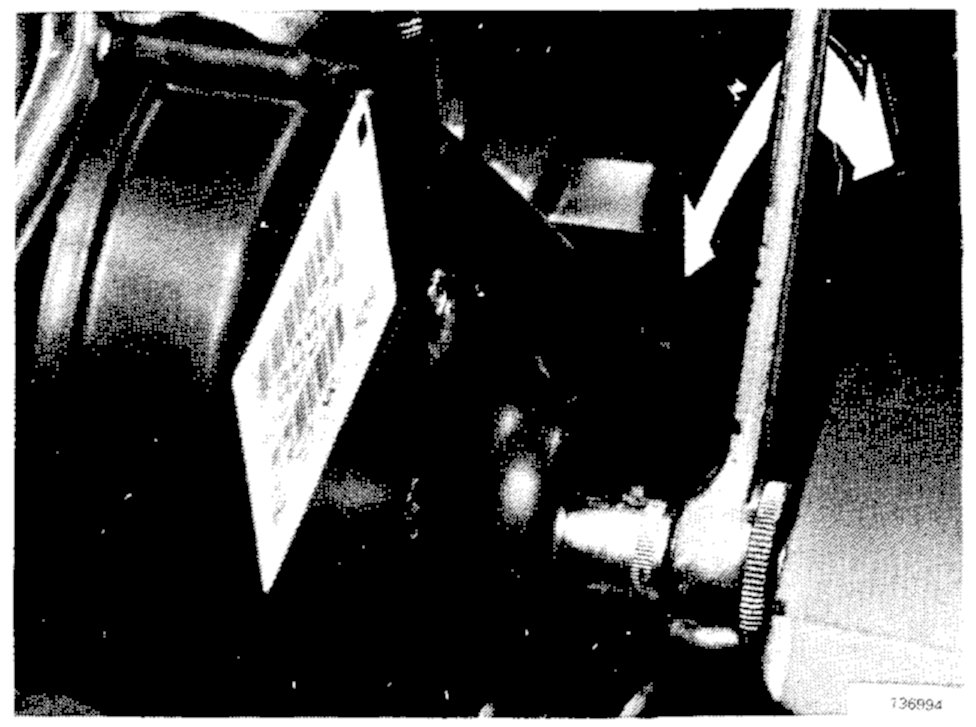
After about 1,000 km (600 miles), re-tension the timing belt again.
| Item | Spec |
|---|---|
| Cylinder head oiled, center out, 3 passes | 20 → 60 Nm → +90° |
| Camshaft wheel | 50 Nm |
| Camshaft caps | 20 Nm |
| Spark plugs | 25 Nm |
| Head warp, max long / across | 0.50 / 0.25 mm |
| Head warp, scrap long / across | 1.0 / 0.5 mm |
| Head height new / min | 146.1 / 145.6 mm |
| Valve clearance, check cold / warm | 0.30–0.40 / 0.35–0.45 mm |
| Valve clearance, set cold / warm | 0.35–0.40 / 0.40–0.45 mm |
| Adjusting shims 0.05 mm steps | 3.30–4.50 mm |
| Coolant manual / auto | 9.4 / 9.2 L |
The manual states these torques apply to oiled bolts and nuts; washed parts get oiled before use.
Source: LEMON manual for the 1994 Volvo 940 L4-2320cc 2.3L SOHC VIN 83 B230FD, Repair and Diagnosis: Cylinder Head Assembly (Removal, Cleaning/Inspection, Installing, Tightening Torques), Engine Tightening Specifications, Valve Clearance specifications, Coolant capacity, and Cooling System Head Gasket Failure diagnostics. Figures are the manual's own scans; tap one to open it full size. Served from the local manuals box.
{kind=link}
{kind=link}
{kind=link}
{kind=link}
{kind=link}
{kind=link}
{kind=link}
{kind=link}
{kind=link}
{kind=link}
{kind=link}
{kind=link}
{kind=link}
{kind=link}
{kind=link}
{kind=link}
{kind=link}
{kind=link}
{kind=link}
{kind=link}
{kind=link}
{kind=link}
{kind=link}